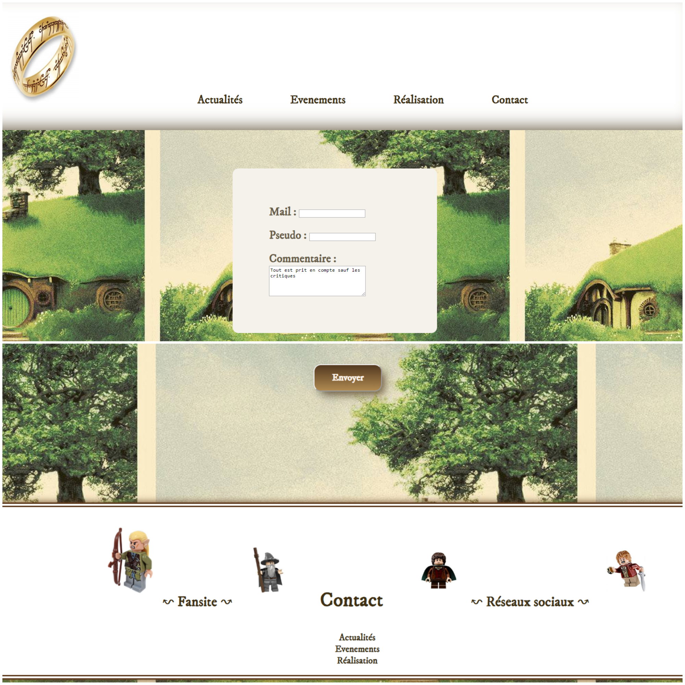
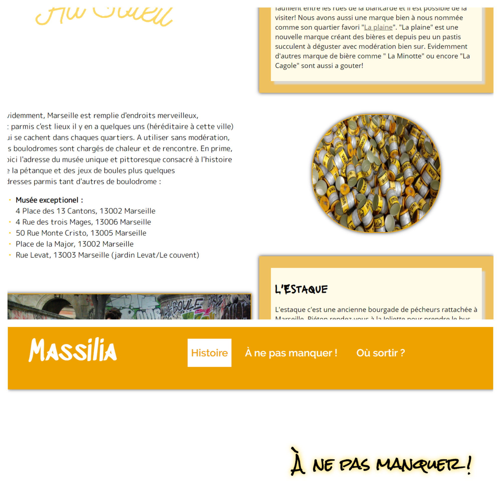
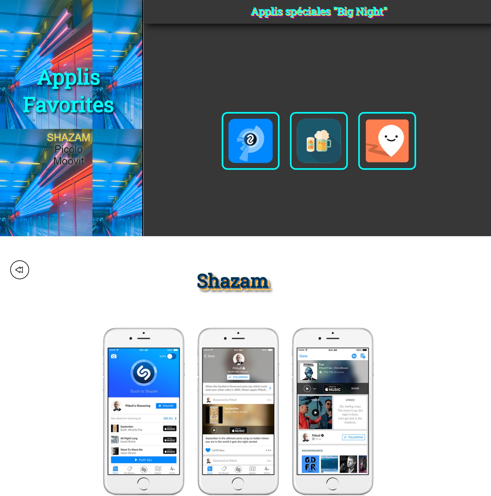
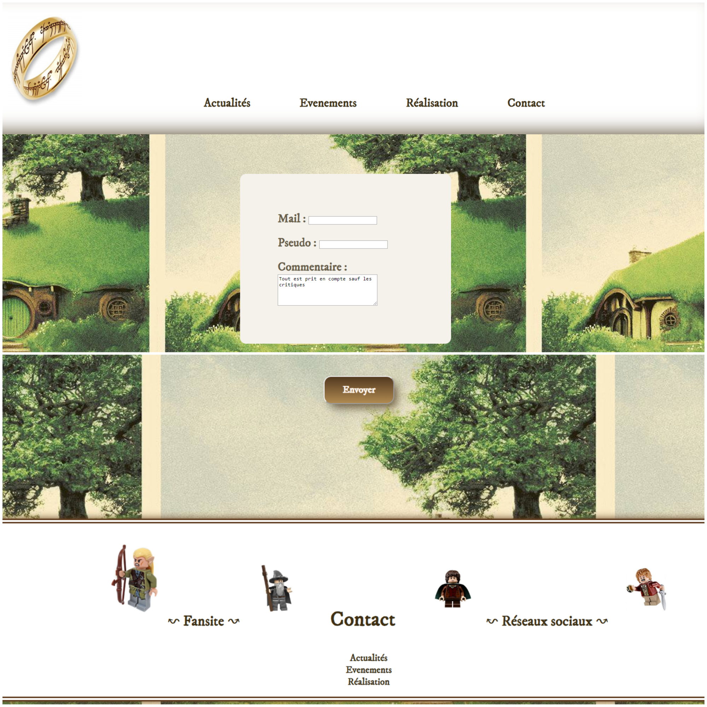
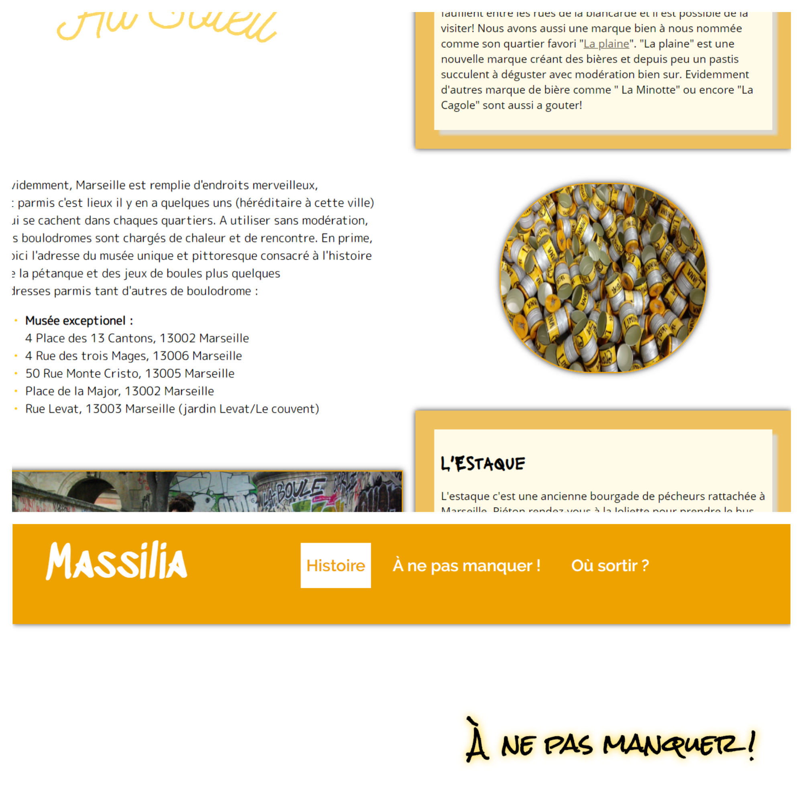
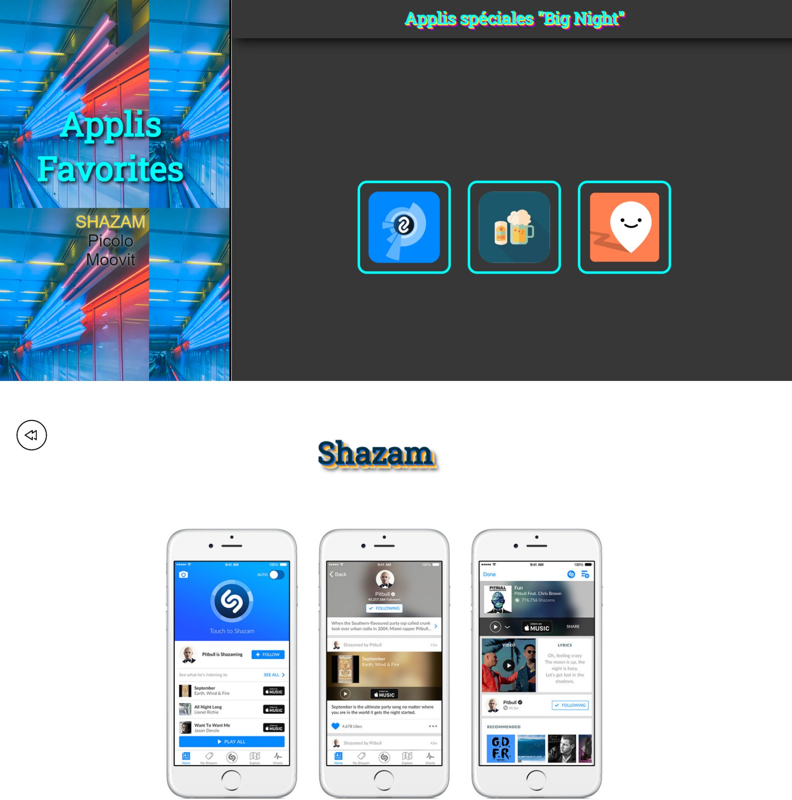

Chloé Mayer, étudiante en programmation en 1ère année à La Plateforme_.
Actuellement à la recherche d’un stage pour la création d'un site sur Marseille, pendant la période de mars à juin.
Actuellement à la recherche d’un stage pour la création d'un site sur Marseille, pendant la période de mars à juin.
 Liste de Naissance
Liste de Naissance
 Connexion
Connexion
 livre d'or d'enfer
livre d'or d'enfer
Voici quelques projets réalisés, travaillés en groupe ou accompagnée de camarade.
Massilia avec Hugo et Alexandra;
Botanique avec Isaak;
Livre d'or avec Amar;
et Fansite avec Julia.
Livre d'or avec Amar;
et Fansite avec Julia.
 Botaniqu'urbaine
Fansite Seigneur des Anneaux
Ville de Marseille
App favorites
Botaniqu'urbaine
Fansite Seigneur des Anneaux
Ville de Marseille
App favorites